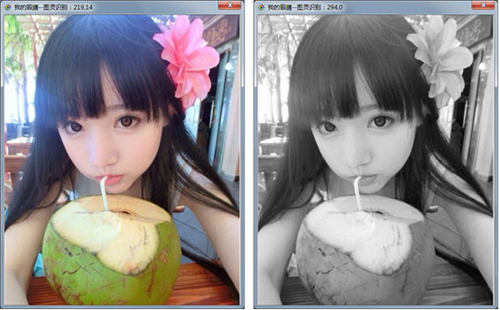

| 命令名称 | Filter_Gray 灰度 |
| 命令功能 | (针对彩色图像处理)灰度滤镜 |
| 语法格式 | Gray = TURING.Filter_Gray(mode) |
| 参数说明 | mode：整数型，可选，模式（默认0:标准灰，1:PS算法灰，2:PS算法去色） |
| 返回值 | Gray：整数型，灰色平均值 |
| 按键精灵 |
复制代码
'获取屏幕图像数据 Call TURING.Pixel_FromScreen(0,0,200,100) '显示获取的图像 Call TURING.Pixel_Preview() '灰度处理 Call TURING.Filter_Gray(0) '图像预览 Call TURING.Pixel_Preview() |
| 滤镜效果 |  |